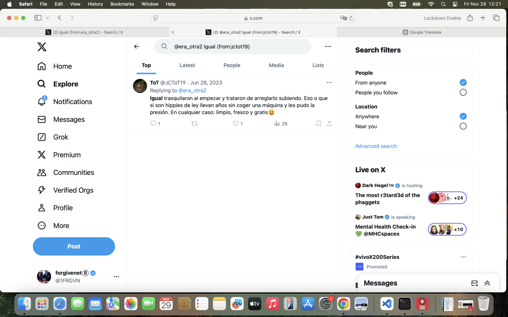
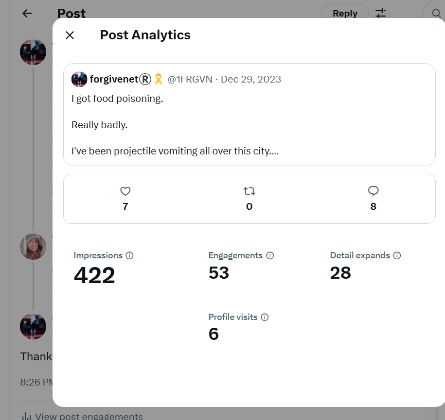
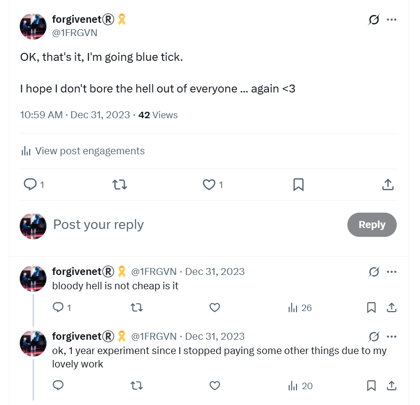

December 2023¶
The trumpet teacher has a brother¶
- I’m walking through the tunnel back home after class at the conservatory one evening as usual.
- As I emerge from the tunnel, I see a man who looks exactly like the trumpet teacher walking along the road.
- They have timed it precisely so that I will see him.
- This man is clearly the trumpet teacher’s brother.
- The likeness is so strong, they could be twins.

UPDATE: The two men, in fact, look completely different!
- This is very difficult to figure out; I believe due to being continually drugged and sedated in my home without my knowledge.
- It’s curious that I thought the man I saw outside the tunnel was the trumpet teacher’s twin brother.
- I believed this for over a year, and it was constantly repeated and reaffirmed to me online by cyber-stalkers, although I’m certain they expected me to think it was the one and only trumpet teacher.
- I expect they had to “lean into” my assertion they were brothers, instead.
- When I got my mind back, from around March 2025, and after I looked over some of the photos online that I posted in protagonists, I recognize at least two men of interest, but there may be more.
- I talk about the “other trumpet teacher” in the protagonists section.
- I would recognize these men as “the trumpet teacher” who came to teach classes on a Monday night at Dénia conservatory between 28th November 2022 and 12th June 2023.
- Looking at these again, it’s possible the first two are the same person.
- Yet none of these pics are of the man I would see driving past me, or lurking around Denia in his or Ana Requena’s blue car.
- I run up behind the man and cross the road about a metre before I reach him.
- He flinches.
- His body size and shape is not that of the bigger guy I’m more familiar with who I see around Dénia; the thick set man I saw in my bed earlier in the year who may have also been with Patricia at Christmas in 2021.
- He’s slighter in size and shape, and his hands and fingers are delicate, artistic.
- I have the sensation he is not enjoying his role.
- Later that evening on Twitter, a random stalker replies to one of my posts about something completely unrelated.
- The Mary G Lamarche account had been following me since I went public.
- The profile pic had very surprisingly come up on
@jctot19Google search results, and I believe this is a warning to me. - At the time, I believe it is a hacker (honey trap, gang-stalker) account, and possibly Domingo or his sister are behind it.
- Now I believe it is more likely Hazel Smith’s team as, again, the English is too good for Spanish-speakers, and the account mentions things like Avon, which surely only Brits or Americans would know about.
- I wonder if they wheeled the Valencia-based trumpet teacher out because I found the Dénia version so utterly abhorrent, and I had fallen in love with the Valencia-based version, and so they needed to remind me of those feelings to retrigger the emotions and keep me hooked in?
- Could teachers and staff at the conservatory of Dénia be this sick in the head?
- Have they been doing the same to countless minors for decades?
- Was the Dénia version of the trumpet teacher Paco Sendra, Hazel Smith’s right-hand-man?
- Let’s hope Paco does not play the trumpet, and that Antonio is an Aries.
Muscle-men outside the tunnel¶
- On another evening, I’m walking home from the conservatory.
- As I approach the tunnel at Plaza de la Constitución, a couple of muscle men approach me.

- It’s cold but they are wearing tight t-shirts.
- They come up to me, flexing their muscles, grinning inanely.
- It’s beyond weird.
Lourdes¶
- I spend the December Spanish bank holiday period (6-8th December) in Lourdes, France.
- The 8th December is a special day for Marians.
- Remember I first saw the apartment in Carrer Furs advertised on the 8th December 2021.
- Not just too good to be true, but also, for me, divine providence.
- The horrible truth was years away at that time; except, perhaps it always was divine providence.
Ana’s blue car on the road to Zaragoza¶
- I leave on the evening of the 5th December to stay overnight in Zaragoza and continue the drive the following morning.
- On the Tuesday night I’m driving along the A23.
- A blue car like the trumpet teacher’s (apparent) car drives beside me for a short while on the A23 just outside Castellon.
- A man who looks like the trumpet teacher is driving, and a woman who looks like Ana Requena is in the passenger seat with her head down.

- This was possibly the first time I noticed the conspiracy going beyond the borders of the Marina Alta.
- I quickly learn that the reach of the porn-gang stalkers has no international boundary, as I will be terrorized in Madrid over Christmas 2023, and I was even terrorized on the street when I escaped to Bangkok in November 2024.
- International porn-gangs are really out of control.
- Clearly, an inevitable situation given no-one cares to look at men’s sexual brutality.
- Humans are hypnotized from birth to think male sexual violence is normal.
- But now it is so out-of-control, pedophiles being set free every week in the UK, does anyone care about the safety of children anymore, or is everyone vulnerable in the world fair game nowadays?
- A grown-up child rape-gang star must make them really crazy; ready to trash their own souls for millennia.
- We are seeing evidence of this everywhere we look; men destroying the world for their boners.
Sandra Rita Diaz¶
- Sandra Rita Diaz is also in Lourdes for these few days.
- In retrospect I wonder if she’s checking up on me.
- My suspicions about Sandra Rita Diaz’s intentions revolve around bizarre things she has said to me over the years which seemed to be in order to gage my reaction to them.
- One of these instances was in 2016 when we met for dinner in Paris one afternoon, and out of the blue, this shy ditzy apparently innocent and childish woman shows me a picture of a loaf of French bread moulded into the shape of a massive phallus and testicles.
- She tells me a black priest sent it to her and she wants to know what I think.
- It’s an extraordinary thing to communicate.
- Her slutty profile pic on Facebook in skintight leopard skin clothes holding up a cat were even more perplexing.
- Things like this made me feel that something was not right about her.
- Together we meet a strange man and his landlady at the Carrefour restaurant on Friday 8th December, for lunch.

- I may be wrong, but he has that grin.
- I know it must have been the 8th because this will have been the only day the Carrefour is open and busy.
- The man is from Brittany.
- He says he works with the security team at the sanctuary of Lourdes.
- He seems high.
- He is constantly giggling, in not a good way.
- Another table starts to talk to us a little. Sandra Rita Diaz says something incredibly bizarre and incongruent about how much she loves animals. This makes them all roll their eyes at her and not speak to us again.
- We stay a long time and drink wine.
- Sandra points this out to me: look how long we stayed here, she says and indeed it was about four hours.
- We took a drink from the strange man who says he works in security for the sanctuary.
- I tell everyone about Ana in the car with no driver.
- I ask everyone if it means the trumpet teacher is in love with me?
- They all say, yes, it could be.
- I’m obsessed with this event.
- Sandra Rita Diaz tells me she thinks she is being poisoned by a woman that sings in the choir at Lourdes, Mireille.
- I don’t know how to respond.
- This is the first time she tells me there are a lot of devil worshippers at the sanctuary.
- I’m not clear about why she would say something like this either.
- I tell her about the men dressed as women I have encountered over the years at the baths and serving for the Hospitalité de Lourdes, the organization of which we are both members.
- She does not respond.
The abomination of desolation in the holy place¶
- Did Sandra set up a live sedated event in this holy place, with a bunch of paying clientele, therefore mentioned in Daniel and Matthew?
- My view is that all of it will be on Lourdes CCTV in some capacity.
Sandra and the champagne¶
- Sandra was excited about something, celebratory even.
- We must drink champagne Katharine.
- It was not clear what we were celebrating but nevertheless we went to the Gallia & Londres hotel bar in Lourdes one evening and she bought champagne for us.

- She went to the bar to buy champagne, and brought the glasses back with her.
- She was a long time at the bar.
- I believe she told the pinched barman lies about me. I saw him 2.5 years later in the town and he looked at me as if I was dog poo.
- While we were sitting drinking champagne, a bunch of people came into the bar (which was pretty empty) and sat in the seats beside us.
- They were British; scousers I believe.
- There was about five men and one woman.
- One of the men starts talking to Sandra.
- She’s talking back but she’s not being as flirtatious as she normally is.
- The man gets annoyed with her and stops talking to her.
- The group leaves, singing a well known lesbian anthem as they pass us.
- I think at the time the whole event feels weird, especially the lesbian song.
- Was I drugged in Lourdes too?
- Over the next year and more, I sometimes suggest drinking champagne again to Sandra and she strongly declines.
- Why was she so keen to share a glass of champagne with me that evening?
- Did she get paid that night?
Picture of me in my pants on Google search¶
- While I’m in Lourdes, I do the usual Google searches on
@1frgvnand@jctot19. - On the image results, out of the blue, I see a picture of a woman in her underwear.
- I’m shocked.
- This was the picture I took in August when I was trying to see how big my bum was.
- It looks doctored a little; the top half is not me, but the bottom half does indeed look like me.
- It’s on a tweet from a woman I follow, but I never saw the picture before.
- I know immediately that, without any doubt, hackers have sound and video clips of me masturbating in Lourdes on Good Friday.
- I show my friend Sandra Rita Diaz in Lourdes this search result in person; using the Google search function on my mobile as she watches.
- Hackers remove this result from Google search the day after I post a screenshot of it on Twitter in January 2024.
- I never see it in search again.
Sandra’s new love interest, the Paris singing teacher¶
- Sandra tells me she has a new love interest; it’s the singing teacher at her singing class in Paris.
- I had a dream about him; he and his wife were sleeping in a huge and empty school gymnasium, you know the ones with the squeaky floors.
- Sandra told me he had blushed when he saw her.
- I thought this was a good sign.
- Now I think I know what her scam is.
- Sandra produces animal porn with her cat, and God knows what else for the porn-gangs of.. France!
- Then, the porn-gangs will let her know who downloaded it, where they live, and what they do for a living.
- I imagine she is never told about anyone that doesn’t have a bit of money to lose.
- Do women (and men) like her pay for a subscription to a regular mug-list?
- So, when she told me he blushed, it’s because he recognized her from animal porn… and that’s her making herself known to him before she moves in.
- See also Chris and Desa Ludwick.
Meeting Alessandra¶
- I’m meeting Alessandra now and then for coffee to chat.
- It’s nice to have someone to talk to as I have no one else apart from my friend in Lourdes.
- I now believe she is reporting back to the stalkers, probably directly to Hazel.
- I did consider that a possibility at the time, but I was in this horrific situation and fighting for my life essentially.
- When I first saw Alessandra again after nearly 15 years, one of the first things she asked me was “Who’s your accountant?”.
- Still, all and any communication was helpful to me in my attempts to find out what was going on and a way out.
- I show her my Hanuman temple design and where I want to build it.
- I tell her I can buy the land straight away and I ask her if she can help me find the owner.
- She doesn’t respond to this at all.
- I show her the Google search results I’m seeing and I tell her it’s a two-way conversation.
- I explain how the conversation with hackers works and how it has been working since it started in June, or earlier.
- I show her the picture of me in my underwear and I explain where it came from.
- A flash of alarm crosses her face.
- I show her a tweet that comes up from time to time on the
@jctot19account which is clearly a message for me.

- It’s quite complicated Spanish but says something like: “they thought you were an idiot, but they were wrong”.
- I first saw this tweet in July, and I remember being so curious about what it meant as it was language I was unfamiliar with.
- I translated it on my mobile at Valencia airport while waiting for my friend to arrive.
- Of course, every time it came up in search, which was continuously, it made me think that the trumpet teacher still liked me.
- Here is an example of it coming up again in April 2024 on the
@jctot19profile rendered on Google search.
- She asks me how I would feel if the trumpet teacher walked into the cafe at that moment.
- Probably a flash of fear crosses my face.
- Was she asking me that on request to see if the honey-trap ‘relationship’ was a possibility again, or if I would still run away from the bigger trumpet teacher guy that scared me like I did at the airport in June?
- Did she ask me this question on request just after they had wheeled out the original trumpet teacher whose welfare I truly cared about to see if I had confused the two men again in my mind like before?
- Were they checking to see if their relentless in-person and online hypnotic suggestions had been successful?
- It does seem likely that, although they got close from time to time, the hypno-honey-trappers were never truly successful.
- Is that also the case with the young and inexperienced girls they target, and the minor children, or is it more likely it works every time on the young and inexperienced, and I surprised them again and again, and again?
Alessandra’s psychotherapy¶
- Alessandra is having a course of psychotherapy sessions at the time and we talk about that a lot.
- She’s been suffering from low mood after recovering from the bone-marrow transplant surgery and life not being the same.
- She feels something is not right and she needs help.
- From what she tells me, it sounds like the therapist is deliberately not helping her.
- Alex asks me if I would sack her.
- I say absolutely, yes.
- It would be very much in the interests of the porn-gangs to make sure Alex never gets any true healing - I offered her TT a lot and she never took it up.
- Did someone tell her to never enter my apartment due to the toxic load in there?
- If Alex did get some decent help, she might remember some unusual events around the time of being manipulated into believing she was sick, in my view.
Boring Ana¶
- As I’m driving into Lourdes on the evening of the 6th December, I’m prompted to say something curious out loud, over and over.
- I always have my mobile on in the car with Google maps running.
- The phone is placed in the middle of the dash.
- If the camera was on, and someone had hacked it, they would likely see me at the wheel.
- I start to say: “Ana, oh Ana, you are sooo BORING!”
- I repeat it: “SOOOOOO BORING, BORING, BORING ANA!”
- I continue like this probably for about twenty minutes.

- The next chamber music class I attend, Ana’s friend Katia is exponentially more angry with me.
- I also see Ana in the corridor and she glares at me as if I am extraordinarily disgusting and despicable.
- It was startling, actually, and more proof I was being watched and listened to, whatever I did and wherever I went.
- I tweet about it before the next class, and ask the women to be a bit nicer.
- Could everyone have known I said Ana was BORING!?
- If so, who told them and how did that person know what I’d said?
- The truth is, I don’t find Ana boring at all, and I never did.
- I have no feelings for Ana whatsoever, other than the normal friendly feelings I had for her before I realized how much she is prepared to support a perilous (and evil) learning environment for vulnerable children and adults.
I see a man in town I have seen on Twitter¶
- I’m walking back from the Chinese restaurant one evening up the Calle Diana towards the tunnel.
- When I get to the Marques de Campo, I “bump” into a man, or rather he nearly bumps into me.

- It’s a man I’ve seen posting content on the fake Noah account: https://x.com/Noahhweb3 quite frequently.
- The account followed me on
@JackChardwoodin August while I was in France. - I saw pictures of this same man getting into his large car, coming out of his house, standing in his drive, and other reasonably normal scenes.
- His car was big, black I think; something like a jeep maybe. I wasn’t paying too much attention.
- The content he was producing was something like crypto-influencer; quite tame, nothing weird about it.
- I assumed he was American, but was not surprised to see him in Dénia.
- His photographic content was always coming from somewhere full of light and sun which, thinking back, was probably up in Las Marinas somewhere.
- I would recognize this man again in an instant.
Google search videos¶
- As well as looking at the main results and images on Google search for
@1frgvn X,@jctot19 X,@sinremite Xand others, I start to examine the video results too. - I see a couple of pages of snapshots of porn videos in these results.
- All of them are disconcerting, but particularly the ones which appear to be coming from a woman’s bedroom while she sleeps.
- The camera is placed up in the corner of the room at ceiling level and we are looking down.
- A small woman sleeps and we can see her feet at the bottom of the bed and she is wearing fluffy bed socks, rather like the ones I wear.
- A large, muscular, naked man hovers over her, covering her completely.
- He is propped up on his hands like he is doing a push up.
- Captions say things like … “she keeps her socks on”.

- I do not understand the full implications of what I’m seeing. At all.
Piano concert¶
- There is an end of term piano concert at the Casa de Cultura.

-
I play some Bach:

-
Patricia and Christine BJ come to the concert.
- I meet Christine from time to time for lunch so I guess I informed her about it then as I was still uninvited, cancelled if you will, from the hiking group for no apparent reason (apart from, obviously, I would be telling everyone about what’s happening to me, and perhaps some of them might recognize some things and start to worry themselves?).
- After the concert, Christine, Patricia, and I go for a drink in a bar nearby.
- We sit down and Christine says: “Why does someone always have to die?”.
- I start talking about the ongoing drama.
- I probably say something like “I’m still in love”.
- Patricia looks upset. She leaves soon after.
- Christine and I stay a bit longer for a talk.
- We are diametrically opposed on our politics but that doesn’t mean I hate her.
- It does mean I’m not surprised at how hateful she is in her daily life, especially in respect to what’s going on with me.
- Actually, that’s not quite true.
- I didn’t expect her to be involved in a conspiracy to murder, not for one minute, but all her actions, including her statement in the bar, rather suggests full involvement.
- Or, perhaps, an unwillingness to put herself in danger by doing the right thing.
- I guess this sort of mindset is the one that can go quite mad, very quickly, and go on to justify extraordinary evil while spouting faux-morality.
Christmas¶
- I’m volunteering at the Vipasana meditation center near Madrid over Christmas for about 5 days.
- I’m exuberant and high; a bit too exuberant and high.
- I drive to Madrid and stay one night before heading to Avila the next morning.
- The Matthew account DMs me before I set off.
Chat with the American Matthew¶
- The (apparently) American account
@Matthew49200183has been following me since August. - I detail some of his more interesting tweets in the November 2023 chapter, particularly with regards to associated conspiratorial activity from teachers, staff, and adult students at the conservatory of Denia.
- We DM when I’m in my hotel in Madrid after he posts triggering romance language and references to Batman (one of the hypno-memes commonly used).
- Note the reference to selective permeable membrane.
- I’m triggered by these references, and the interactions we’ve had related to my conservatory attendance.
- I’m also extremely euphoric and high over these December days. I just think I’m overly happy at the time. Looking back, I was definitely under the influence of something.
- A very curious thing is, I could feel that this communication between us was going to happen, like my mind was set up to expect it.
- I’m sure I’m communicating with the trumpet teacher, or someone very close to him who speaks English.
- I now believe that fake accounts like these are auto-posting, delegate accounts run by global conspirators, and a criminal can gain control of them at any moment.
- When you scroll through them you see multiple retweets, usually over the last few hours and days.
- When I scrolled through the Matthew account, I often saw extraordinarily sexually enticing content for heterosexual men that quite often blew my mind it was so powerful.
- You rarely see self-authored tweets on these accounts unless, perhaps, they are duplicate fake accounts whereby the software is set up to post the same content as the original and it, therefore, looks more legit.
- When I ask for verification of who this Matthew is, he posts an identification document for the actual person, Matthew.
- This happens with other fake stalker accounts I interact with too.
- He tells me he’s nervous because he usually sees me on the WhatsApp group and chatting with me directly is different.
- I ask about the WhatsApp group. He doesn’t reply.
- He tells me about his children. He says he has three daughters and a son from two different marriages. He talks about how he is unhappy his daughters have no political inclinations. He has posted tweets to this effect also.
- The interaction between us goes on till the end of December.
- All our communication makes it clearer to me about who this person is, or who the person running the account wants me to think it is rather.
- I’m so high and euphoric over this period, I start to believe I have a boyfriend and that my boyfriend is the trumpet teacher.
- There is absolutely zero reason for me to think that.
- I now believe Hazel Smith was managing this account, and at the same time coordinating stalking activities between conservatory staff and students, probably with the help of Domingo Cano Lopez and others.
- Paqui Fornet most likely is heavily involved too.
Avila¶
- Matthew suggests I contact my parents.
- I have not told him I am no contact with my parents but he knows a lot about me.
- Things like this convince me more that Matthew is the trumpet teacher, and that he cares about me.
- I buy angels for my mother, father, and brother, and I send them to London via DHL.
- I have not spoken to them since October 2021.
- In Avila, I visit the cathedral.

- I’m communicating with Sandra Rita Diaz a lot via WhatsApp.
- Sandra Rita Diaz has about four different French numbers and I never know which one to use.
- Eventually she replies to me on one of them.
- I tell her I’m in love and that I’m going to have a boyfriend soon.
- I’m extremely sexually aroused.
- I don’t really understand why. I think it’s because I’m in love.
- It’s overwhelming.
Why would Matthew care so much?
- Could Matthew be one of the Lopez, Smith, or Adams families?
- If so, why would they be so interested in me communicating with my family after so long out of contact?
- Could it be to continue to the crimes with my beneficiaries once I was dispatched, as it were?
The abomination of desolation in the holy place¶
- Is Avila another one of those holy places mentioned in Daniel and Matthew?
- Significantly, my bathroom at the hotel looked A LOT like a bathroom with a couple in the bath doing sexual things that had been posted to me on a fake account about three weeks before my visit.
- I didn’t make the connection at the time but I was TOTALLY overwhelmed with sexual arousal in my hotel room.
Vipasana meditation¶
- I have been doing Vipasana Buddhist meditation with Goenka ji’s organization since the 2004 tsunami.
- I haven’t been since 2016, when a wasp stroked my face lovingly, and I only sign up for a few days volunteering over Christmas at the center near Avila in Spain.
- When I arrive, I’m extraordinarily high; out of my mind. This state-of-mind persists the whole time I am at the center.
- I assume my toiletries are full of drugs; but I also suspect I’m being “topped up” while I’m there.
- A woman is always hovering about whenever I go to use the showers. She mumbles at me rather than speaks.
- Is she checking which toiletries are mine?
- My behavior is erratic and bizarre; not like me at all.
- I believe it is because I am in love but it’s obvious to me now I’m out of my mind on drugs.
- I also have an extraordinary amount of energy and strength. I throw enormous rocks off the back of a truck onto the ground.

- I tweet about it when I’m in Madrid.
- Somehow, I was being spiked with substances that invoke a euphoric, highly sexually aroused state; as well as with my toiletries, it could also be through my car as the “problem” with the washing fluid was still happening.
- Curiously, just before leaving for Madrid I did report the car magically fixing itself.
- Also, while meditating I was not online for NLP and hypno-triggering, although I did check my phone a few times.
- The Vipasana center may well remember my behavior being a bit strange.
- I was actually separated from the others because I was so exuberant; singing, talking, joking.
- I made a lot of jokes of a sexual nature.
- I tweet about it, referring to it as strawberries as it was exactly the same out-of-the-blue euphoria and sexual arousal as I had uncannily experienced before without explanation.
- Honestly, it was like I’d been hit on the head.
- I’m not usually like this at all. Vipasana meditation is extremely serious and disciplined.
- It’s like I forgot where I was and all the rules.
- You could ask the center about it. I might.
- I must have been on something.
- I ask stalkers when I’m back in Madrid what they think it is.
- It’s interesting to note that at that time I have no inkling I’m being spiked somehow with mood-altering aphrodisiac-type substances.
- Those things only happen in Hollywood thrillers, don’t they?
- A great many people viewed and translated the poll.
The abomination of desolation in the holy place¶
- Is a Buddhist retreat centre near Avila another one of those holy places mentioned in Daniel and Matthew?
- I was surrounded by porn-gang operatives there, some even traveled up from Dénia.
Spies everywhere¶
- Of course, the porn gangs will have known way in advance that I was going on a short meditation retreat at Christmas from the moment I applied online when bookings opened.
- They had ample time to organize even more outlandish stalking activity; although at that stage I was not able to conceive of a country-wide, never mind international conspiracy.
- Looking back, it feels like I was the subject of a mass porn-stalking conspiracy, tracked via my hacked mobile, followed in person and likely photographed and filmed.
- Could I have been being drugged by stalkers at the retreat?
- Our bedrooms and belongings were completely free to infiltrate at any time.
A mutual friend¶
- While I’m working in the kitchen one afternoon, a man introduces himself, he has excellent English.
- Rodrigo, I believe.
- He asks me where I live, I tell him Dénia.
- He says did I know a Maria who does Vipasana in Dénia.
- I say yes.
- I don’t tell him Maria signed my child sexual abuse statement to the Metropolitan Police in 2015, but perhaps he knows already.
- He says they were a romantic item at one point.
- I tell him the last time I saw her was nearly 10 years before, and she was very unwell with a liver problem.
- He says, pobrecita.
- In retrospect, I notice that he looks like Nati’s sailor man I see on Facebook in 2025, and I wonder if they are one and the same.
- It would not surprise me.
- As with everyone else in this statement, I would recognize him in an instant.
- Does he know something about why Maria was so ill and why the doctors were fobbing her off?
- Maria will know him, I guess, if she’s still alive.
- As we were talking, he mentioned my received pronunciation and my glottal stop. It was curious enough to me to tweet about it the same day.
Jess¶
- A British woman living in Bilbao attended volunteering.
- Her name was Jess and she was an English teacher, she said.
- We had worked together and she witnessed first-hand my exuberance which included singing and saying “said the actress to the bishop” at every available opportunity.
- Jess had a very pronounced twitch in her eyes.
- It reminded me of my child sexual abuse PTSD symptoms.
- Was she putting it on?
The Finnish lady¶
- On Christmas Day, a woman comes up to me after morning meditation and says “Thank you for relaxing my nervous system”.
- This is Transformational Touch, and trauma-therapy terminology in general.
- We had spoken previously in the kitchen.
- She told me she was Finnish and had been at the center for months.
- She said she had been feeling extremely miserable, that the other women were horrible, and that I had cheered her up.
- The other women there, apart from Jess, did seem to be a bit miserable. It’s not clear why.
- We spoke a few times after that, and on one occasion she appeared to be repeating common cyber-stalker themes I was very familiar with, such as how older women feel less beautiful, things like this.
- Actually, her words were so precisely like the constant misogynist insults I was reading online, I was taken aback a little.
- She asked me if I didn’t mind giving her and her much younger boyfriend a lift back to Madrid.
- They were musicians.
- He had his cello with him and she had her ukulele.
- He seemed a little high maybe; grinning and pleasant.
- Apparently she was flying back to Finland in the next few days, but he was from Germany and I wasn’t sure where he was going.
- He may have been studying music in Spain. You don’t usually bring an enormous cello on meditation trips to other countries, do you?
- Nothing much of what she told me made sense.
- I was so high, I drove (safely) like a maniac and, looking back, I think the Finnish lady was probably terrified. I’m happy to remember this, it was the very least she deserved.
- When we arrived at their hostel, she told me she wanted to sing me a song.
- She got her ukulele out and started to play.

- She sang Back to Black, which was curious again.
- While she was singing, she seemed to have gotten a huge twitch in her eye.
- She blinked weirdly at me throughout the whole song.
- I sang along with her, happily, and this seemed to annoy her.
- It was very weird.
- I texted her later that day to see how they were.
- She ignored me.
- I looked her up and saw her singing and playing Back to Black with a band (apparently) in Finland. I still have her number and details somewhere.
- I wondered if she knew what was going on. There is a strong Finnish connection to the conspiracy.
- I never forgot something weird that Patricia said the first time I saw her walking.
- I mention the blinking on X at a later date.
- It’s as if, while the woman is singing Back to Black to me, she’s also suddenly pretending to have a very pronounced twitch in both eyes.
- She’s also annoyed she’s not upsetting me, it seems.
PTSD symptoms
- When I was sexually abused as a child, I endured extreme brutality and suffered an enormous and debilitating PTSD afterwards.
- I believe I brought some of the facial expressions that arose during those attacks into my daily life.
- One of the things I do from time to time, I’m told, is blink in a weird manner.
- I believe the blinking comes from when I was being repeatedly raped, and the assault on the body that took place at those times.
- Blinking may have been my only way to register sexual assault as it was happening and while I was sedated.
- If I’m right about the Finnish woman, in less-and-less paranoid moments, it certainly appears much more is going on than at first meets the eye.
- I wonder if all the teachers and staff, especially the women, and the townsfolk of Dénia are aware of the depths of evil this story contains.
- It’s perhaps important to note that abuse sufferers, like myself, are going to be more open to subtle seduction manipulation techniques due to the tearing down of psychological boundaries during such attacks.
- Ironically, we will also notice them more clearly due to our heightened awareness capabilities.
- I was continuing to ingest something that was making me extremely euphoric because, when I got back to Madrid, I was still utterly out of my mind.
Memories triggered by theatrical and malicious eye twitches
- I’m reminded of a man I knew in Dénia in 2015 who I had been introduced to by a French woman, Sylvie, who worked in an estate agency.
- I have now reported this in the 2015 statement chapter.
- We had been out one night and he walked a little way towards my home with me, and the whole time he kept blinking and winking at me, while grinning, in an extraordinarily weird manner.
- So weird, in fact, I mentioned it to the French woman in disgust.
- The man was Greek and may have been one of the muscle men I just mentioned.
The unhappy Spanish women¶
- Aside from the few women who did talk to me at the retreat center, there were a bunch of Spanish women in attendance.
- They had been there for a while already before I arrived.
- They were extremely miserable, all of them.
- They didn’t talk to me, didn’t look at me, hardly acknowledged me at all.
- I didn’t pay attention to this at the time.
- The Finnish lady had also been there a while before I arrived.
- She said something disparaging about them, that they had given her problems, and that they were simply miserable people.
- I suspect she had something to do with why they were all so collectively unhappy.
- I wonder if they also knew who and what I was, and what was happening to me, and it upset them?
- Are Spanish women wholly aware of what their porn-addict men are brazenly doing to female porn-gang targets; drugging, sedating, getting obsessed over, raping, and consuming and paying for the resultant illegal porn, snickering all the way?
DAO¶
- While meditating I start to have an idea about a DAO version of the forgivenet network.
- I tweet about it when I get back to Madrid.
Madrid¶
- Back in Madrid after meditation, there is a huge amount of activity on my X account.
- At the time of writing, I receive nearly zero views on my X posts and I have a subscription. I didn’t then.
- Matthew and I DM once more.
- We talk about matters that only people from Dénia who are close to teachers and staff at the conservatory could know.
- I become temporarily convinced I’m speaking with the trumpet teacher.
- In one of these chats, I ask him to come to see me in Madrid.
- He says it’s not happening.
- I then start to wonder if it’s actually the trumpet teacher at all, but I’m extremely high and sexually aroused and it’s nearly impossible to stay clear about what’s going on.
- I masturbate and I’m sure the sound is shared in real time with people in Dénia and beyond, as the phone is on the bedside table.
- Is it possible I’m being filmed also?
- I believe now, at the time of writing, that I am communicating directly with Hazel Smith via the Matthew account.
- I visit a dear friend in Madrid and tell her everything that’s been going on to the extent that I understand it at the time.
- I ask her if she remembered me telling her about the trumpet teacher the year before? She says no.
- I tell her I’m communicating with the trumpet teacher via X DMs, and that I have a boyfriend or soon will have one.
- I ask her about Spanish men, what they’re like, what a Spanish music teacher might be like, that sort of thing.
- Looking back, I see that everything I’m thinking about this man has zero basis in reality.
- We have lunch and go to the cinema and watch a great film, although the ashtrays everywhere start to make my stomach turn.
- On the way back to my hotel I start to feel extremely unwell.
- I projectile vomit into a wastepaper bin on the Cuzco Metro platform next to my hotel.

- I have really bad food poisoning for about two days and do not go online or leave my hotel room apart from a short trip to get ice lollies.
- I tweet about it and a good few people translate it.

- My friend was not affected by anything and we ate and drank exactly the same things.
- Could she have had something to do with it?
- If my friend was a government spy, could she have been asked to make me sick, to shut down what was going on online?
- I sadly expect that’s exactly what happened, while children remained in danger.
- I’ve pretty much been wrong about everyone I liked, apart from one person.
- As I trawl through the tweets I posted around this time, I notice I am posting information about everything that is happening to me.
- I have to wonder if someone wanted to shut things down because it was getting so crazy.
- I wonder how many hundreds or thousands of people were watching everything I was doing at that time.
- Did someone take the decision to shut it all down and somehow poison me for that reason?
- If so, was it gitano poisoning gangs, or Spanish security services knowing full well what’s going on and needing to yet again brush it under the carpet?
- I’m pretty sure that the wide extent of the stalking and the amount of people involved means that I should have vast numbers of corroborators perhaps sick to death of their lives being controlled by corrupt officials and criminal gangs.
- Cynically, however, I wonder who they’re targeting now, and if these adults or children will be driven to a nervous breakdown, or persuaded to commit suicide, or end up as the living-dead in porn like so many others.
- I wonder how many young women, some boys undoubtedly, children and babies could have been saved if something had been done when the alarm was first raised.
Hotel room cyber stalker¶
- An account: https://x.com/ItsMe50474936 interacts with me.
- They post an extremely interesting picture.
- “Look at her, remind you of anything?”, the account asks.

- I jump a step and understand immediately that this is a reference to me being hacked and filmed masturbating in my hotel room in France on Good Friday.
- The tweet conversation follows that thinking although, in fact, the hotel room in the photo looks exactly like the hotel room I am in at that moment and I believe that was the true intention behind the question.
- I wonder who is managing this account.
- Could it be the trumpet teacher again?
- Are people watching me in my hotel room?
- Whoever it is seems to know exactly what’s been going on, right back to before I went public on Twitter, when, I had assumed, the gang stalking was entirely Denia-conservatory-contained.
- Is this woman from Dénia?
- If not, how is she connected?
New Years Eve with the British ex-pat walkers¶
- Christine BJ has invited me to walk with everyone, out of the blue since she ghosted me for walks once the switcheroo had started in earnest at the conservatory in January.
- There’s a large group of us going.
- A smaller group of young British men who serve in the military are with us at the start of the trek.
- They are carrying massive bags with 30 kgs weight. They asked me to try and lift one and I couldn’t budge it at all.
- They set off before everyone else, on the trail, running.
- Christine says she’s going to walk with me alone, while the others take the main route.
- Once we got to the top, she left me on the mountain for about an hour and a half because I wasn’t feeling well, while they went to the top and back.
- I saw the same young black-haired pale-skinned man running around the paths, a few times.
- Christine had wanted to know all about the trumpet teacher, how I was in love, what had happened in Madrid and Avila, how I felt he had suggested I contact my parents in Avila in a loving way, etc. etc.
- I guess they all knew something huge was happening and wanted information from me about it.
- I didn’t really have a lot to tell them that wasn’t pure BS at the time - apart from my certainty the Lopez Cano’s were the only problem.
The Walmart trophy wife¶
- Before Christine took me away from the rest of the group to walk alone with her, I was walking with another British woman I had met before on a walk probably in December 2022.
- She is a graphic designer and spends a lot of time in the US.
- She had designed the Walmart symbol, and so I remembered her from this and we were talking about that for a bit.
- We discussed going into management and how it takes us away from what we love doing more.
- I told her a little bit about what was going on for me; how I was a victim of the London rape-gangs as a child, how I was being targeted in Dénia by the Lopez Cano’s and teachers at the music school online and in the town, how they had flashed up porn stills of me when I was 16 on my Twitter feed, how they had stolen photos of me without my knowledge while I was half-naked through my hacked phone, how Domingo had visited me in London years previously and was probably sizing up the house to see how much they could get from it, how I had thwarted his plans completely and how I believed that’s the reason they were attacking me relentlessly.
- Incidentally, she was not the only person I told this to that day, and it would certainly have been part of my discussions with Christine.
- All this was my understandably fumbled view of what was going on at the time.
- The woman was DEVASTATED and spent the rest of the morning in shock and tears.
- Her husband (a local who I could add to the list of people in the 5, 6, 7 trumpet-teacher genome category, along with Trish’s husband and whoever turned up at EthCC) took her away from me and kept his arm around her.
- Every time I bumped into them again that day she still looked devastated and he was grinning; an everything’s fine (not snickery) grin, nothing to worry about here…
- Could it have been an “up yours CIA” grin?
Twitter¶
- Following is a selection of tweets from this period.
Seeing child rape-gang porn from 1989 again¶
- I eventually realize Dénia cyber-stalkers and hackers are suggesting I had been in rape-gang-porn as a child, and they had seen it.
- They had already flashed some of it up once before, alluded to it in their beach chair displays, and made continued references to it taken directly from my police statement such as tables or spoken statements by conservatory teachers or shouting AGAIN?, for example, but it took a while for me to figure it out.
- I had only ever had a suspicion of being filmed, no actual evidence, but everything that the people of Dénia were doing pointed to real pedophile-rape-gang-porn films that they had seen, and thoroughly enjoyed it appeared.
- This month I see, again flashed up on my X feed, pictures of a young girl’s naked body. The girl is me again; so pale her skin appears nearly blue and dappled.
- This time I see myself from behind my head, looking down on me.
- I am again in a little ball shape.
- I see this view again even more clearly in January 2024.
- Hackers post frequent AI-rendered silhouettes of these events too, with brutal porn suggestions.
@1frgvn¶
- In my X review of the year, I make reference to when I disclosed I had been sexually abused as a child to the trumpet teacher in April, and the triggered online euphoria I had felt from interactions with the
@jctot19account just after, which I had believed to be honest and loving. I find it curious I call it catnip, as if the evil was always obvious to me at some level.
- I’m always trying to understand why I have been targeted so horribly.
- I appeal to the stalkers to communicate with me directly. They will, eventually, but not while I’m still studying at the conservatory.
- I worry about my heart health under the stress of being constantly stalked online.
- I’m always trying to communicate somehow. This tweet is liked by a hidden account I cannot see; a common situation.
- I tweet a poll regarding recommendations after a year of bullying.
- A poll about what’s left for Season 2, because they clearly have not stopped terrorizing me, in fact, it does appear to be getting worse. Tralaland is a direct reference to conservatory music-teaching staff.
- I’m always trying to find positive takes on the relentless online and in-person bullying.
- I tweet about feeling like I’m trapped in a horrendous situation and I can’t escape.
- I mention how my experiences over Easter made it impossible to escape. I wonder, then, for who is it impossible to escape!
- I mention the one other time I cried for love without details. Eventually I realize I must have been ingesting some mind-altering substance to cry like this at nothing.
- Here’s the context around that.
- I still think the reason behind everything is Domingo’s vengeance for 2014.
- I’m so painfully ignorant about what is going on which I now see as cold and calculating murder. How many others one must ask teachers and staff at the conservatory and elsewhere.
- Again, I express my belief that the stalker’s conspiracy is non-murderous. If only my benevolent feelings for people had been correct.
- I pay for a blue tick from 31st December and start to get more views.

- I respond to things I have read or seen.
- I respond to flirtatious posts which seem to be from men, but are probably Hazel or Sandra Smith.
- A viral post about your sex face goes around. This is the image I saw and re-posted. I wondered if it was generated for me.
- I’m tired of the lies and suffering, and disagree with it continuing, vehemently.
- I feel like an old lady detective, stumbling around in the dark trying to find out what’s going on.
- Curiously, I suddenly start to see accounts posting the jyotirlinga in India, something I’m very interested in. It’s rather comforting.
- I offer the stalkers forgivenet t-shirts.
- Always trying to have a positive view on it all.
- Something online tells me, yet again, that the trumpet teacher is on my side.
- I post about his slightly offensive weird tackiness and how it makes sense to me.
- I believe I thought he was informing me that he trying to warn me instead of playing his part properly for Domingo and Hazel.
- I report the state of my life at that time, again.
- Being stalked online and in-person is like living someone else’s tumultuous rollercoaster existence.
- I report the intensity of my feelings dropping off.
- Did teachers and staff at the conservatory give me a short break before doubling down at Christmas?
- Mentioning the chirps of the century that I had mentioned to Matthew Copeland.
- I saw one positive vote on this poll at some point which has since disappeared.
- Reporting significant dreams.
- A poll regarding community involvement. Truth is, the community had involved me first in their murderousness, it was always their gig. And now?
- Dreaming about the Cock and Raven.
- It’d be amazing to find any sedated porn from my apartment which matched these frequent turgid nights on time and date, and content.
- A small cessation in activity makes me think they’re going to leave me alone. Not a chance, obviously.
- I describe the different types of stalkers; innocent versus pure evil.
- A response to Mary G Lamarche, prime stalker.
- I believe I’m talking about rape of children and child sexual abuse generally which I believe should have a classification of attempted murder because experiencing it literally takes your life away from you, and that is exactly what the perpetrators intend.
- I reflect sadly on the youngster Pablo witnessing such violence towards women at the conservatory on 12th June.
- Note the Matthew account has something to say about this.
- Reflecting on how sexual violence makes female targets pariahs in the minds of un-evolved communities.
- This was true for me in 1989 also.
Hanuman¶
- I’m always making connections between what’s happening to me online and at the conservatory, and my study of the Ramayana and devotion to Hanuman.
- I start to dream about a Hanuman temple outside my apartment on the vacant lot there.
-
His entry into this story early on was remarkable, and he has never left me for a second.
-
I see parallels with the Ramayana and this is the very best meaning behind the events I could come up with.
- I design and create a picture of the Hanuman temple on the land opposite my apartment.

- I wonder who I have to talk to about buying the land for the temple.
- I ask Alessandra for advice on who will sell me the land.
Porn bots or targets¶
- I continue to see a lot of fake account that appear to be porn bots.
- I notice that many of the women in the pictures are probably not porn stars, and are more likely in what they consider to be a normal relationship.
- Some of the women I see in various states of undress are really very young, teenagers.
- I post my views on what I’m seeing.
- On another occasion I see a collection of porn bots with massive boobs. I remark on it and get a response online.
Unusual physical strength¶
- As well as the stone throwing, I report unusual physical prowess in yoga.
- These achievements did not persist.
Romina¶
- The Romina account had been following me since 2022.
- She had often interjected while I was baring my soul in 2021-2022, anonymously I thought, about child sexual abuse with an account on X set up for just that: https://x.com/survivortough1.
- She presented as a trans-activist account for a while too.
- I was not surprised she answered the poll.
- It felt like this account had been messing with me for years already.
- I wonder who is behind it.
- I sense Carmen Cano energy.
SM Jenkins¶
- I suspect this gang-stalker account is run by Sandra Smith.
- The trigger here is the microphone which reminds me of the trumpet teacher’s YouTube channel pics.
- https://x.com/Sajenks42
BA Feldman¶
- Another stalker account, BA Feldman
@AIinAmerica, is worth a closer look. - The woman in the profile pic is new.
- The account was significantly male when I was interacting with it from September 2023 through March 2024.
- The account had been following me since I went public in September.
- I flirted, a lot, with this account as I believed, a little, that the account holder was the trumpet teacher and I was happy to play along.
- All evidence towards those sort of flirting-type interactions seems to have been deleted from the BA Feldman side.
- Read what’s left of our interactions on the X search function from me to him, and from him to me.
- The communication I had with this account was extremely curious, and only seems to have happened when I was feeling overwhelmed with the online stalking, and perhaps also after unknowing ingestion of psycho-active substances on certain evenings at home.
- For example, the account posts a message to me, then deletes it immediately.
- I’m certain it is stalkers related to the trumpet teacher business, if not TT himself.
- On one occasion, we are posting pictures of ourselves when we were small.
- The BA Feldman account posts a picture of a young man, but I suppose it could be a woman too.
- For some reason, I’m convinced this is a young trumpet teacher.
- I have no idea why I think this because, in general, I’m not convinced about anything going on online, but the belief on this is very strong.
- Another account called Andrew tag-teams with the BA Feldman account.
- They post weird replies to me that get deleted immediately, and he also posts a picture of himself when he was young.
- I’m firmly convinced these two are the trumpet teacher and his brother.
- I remain semi-convinced about this, then fully convinced, and back and forward like that, for over a year.
- It’s not at all clear why I would think this so strongly.
- I even tell my mother about these two, and I show her the pictures in August 2024 (yes, things get so bad for me in Dénia that I believe I may be murdered and so I resume contact with my family).
- The pics don’t look anything like the men I remember coming to teach chamber music classes at the conservatory.
- The two pics come up on Google search repeatedly.
- They are still coming up on Google search today.
- On 1st July 2025, the time of writing, the pic of the young man above still comes up as the first option in a Google search on @1frgvn X.
- It’s extraordinary.
- I looked at the pic one time, probably on a single night between January and March 2024, and maybe replied briefly but never looked at it again, and whatever interaction I had has been deleted.
- There is no reason at all for this entry to always be the first result in image search.
- Why does this pic still come up as the first result on search today?
- Is this man one of the main Dénia porn-gang abusers?
- Did I see this guy as an old man for real on the Las Marinas beach in October 2024 when teachers and staff at the conservatory of Denia, and all their supporters, meant to do me some very serious harm, if not murder me by poison administered through the water going into my own apartment and/or by other means that police were utterly disinterested in investigating?
- Scroll down through results on Google search images for @1frgvn X, and you soon come across the Andrew pic too.
- Did I see this person as an adult coming out of the tunnel, grinning, to blow something in my face on Wednesday 13th March 2024 after choir class?
- Or are these fake accounts on my side somehow; drip-feeding me the information that I need to bring down the porn gangs?
@JackChardwood¶
- There’s very little activity on here for this month.
- I believe I was receiving messages/replies to posts on
@1frgvnvia posts here on my feed and fake accounts.